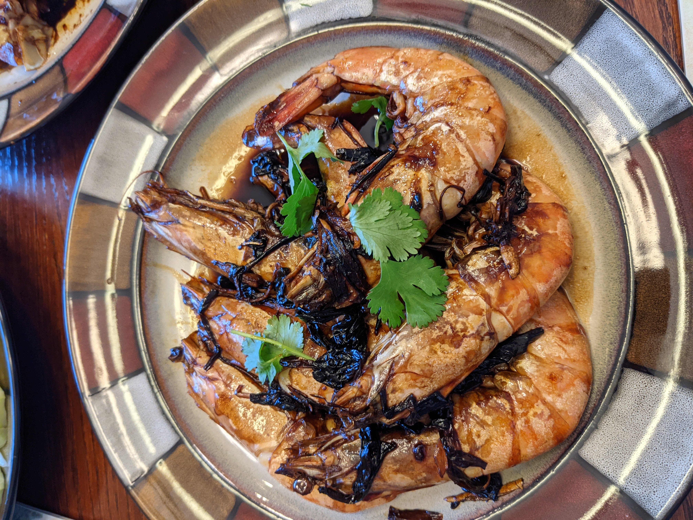
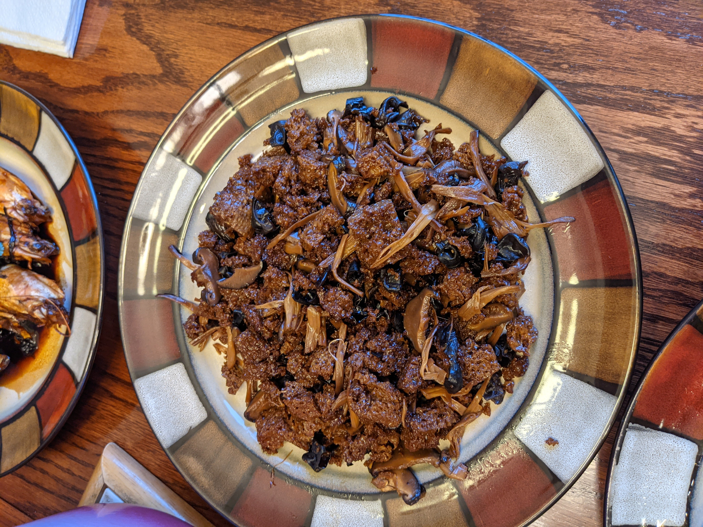
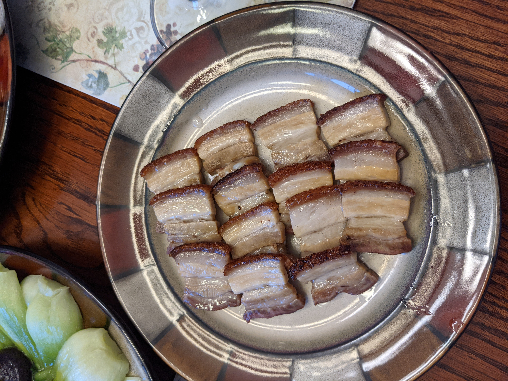
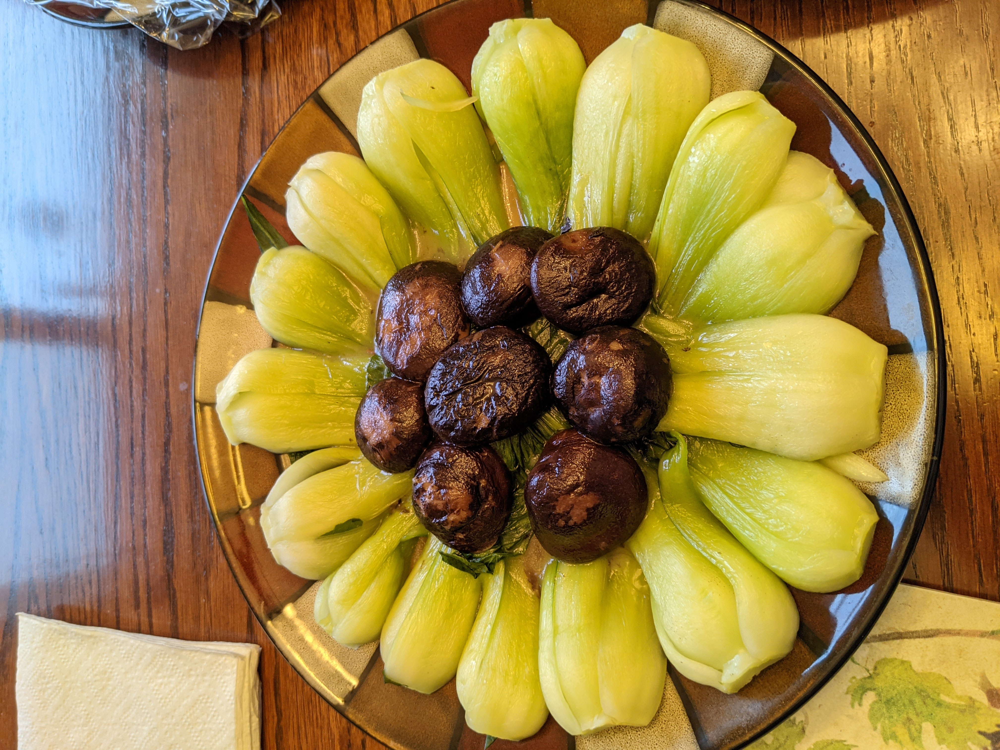
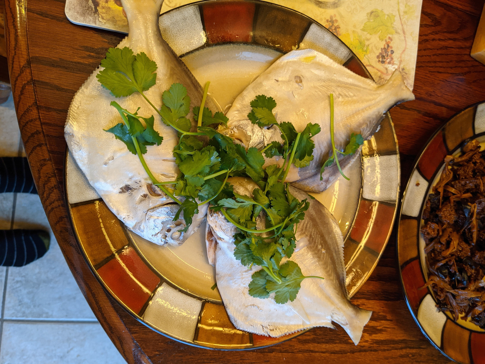

Happy Lunar New Year!
Sugar, soy, and everything nice . . . ?
February 15th, 2021.
Last week was the Lunar New Year, which is always a good reason to cook and eat prodigiously, especially in our household.
I came home to celebrate the New Year with my parents, which was especially nice given that being at college prevented me from being back the last four years.
It's always comforting to enjoy a home-cooked meal, particularly the Shanghainese fare that I grew up eating.
Despite my familiary, I feel that many people in the United States (and outside China) don't really have a grasp of the distinctiveness of Shanghainese cuisine.
Most of the Chinese food eaten in America has its roots in Cantonese food (think lo mein, chow fun, etc.) - which is actually a rather fascinating consequence of immigration history.
And, while in recent years there's been quite the explosion in regional cooking, especially that of Sichuan (a topic for another day), I've still not seen many restaurants that specialize in food of Shanghai and the surrounding Jiangnan region.
Shanghai, besides having its own cuisine, also boasts its own local dialect of Wu Chinese which is mutually unintelligible with Mandarin.
The cuisine is distinguished by a focus on fresh and seasonal vegetables, consumption of pork and seafood (both from the rivers and the sea), and a flavor profile which leans heavily on soy sauce and sweetness.
I hope to give a brief introduction here, but if you're interested in learning more or even trying to make some of these dishes yourself, I'd highly recommend Fuchsia Dunlop's recent book Land of Fish and Rice.
Dunlop, who is noted for her authoritative work on Sichuanese cooking, has done a fantastic job describing and cataloguing the diverse ingredients, dishes, and techniques used in the Jiangnan region.
With that, I wanted to use this post to share some of the dishes and unique characteristics of Shanghainese cooking, at least insofar they appear in my family's repertoire.
I've also finally figured out how to add pictures to my blog, so there's a slideshow at the bottom where you can see pictures of each of the dishes.
Before I begin talking about the food, I wanted to note is that it is custom to make eight (or a multiple of eight) dishes for the Chinese New Year, since it's a lucky number in Chinese culture.
The first dish I assume most of you are familiar with, which is spring (egg) rolls.
Normally, we make these with a stuffing of Napa cabbage, fensi (also evocatively called cellophane noodles, as I've just learned from Wikipedia), pork, and dried mushrooms.
However, for the special occasion, we swapped out the cabbage for golden chives and added sliced bamboo shoot.
Golden chives are essentially normal chives that have been grown in the dark to inhibit chlorophyll production, similar to the process used for white asparagus.
This unusual method produces a flavor much more restrained and subtle compared to the sharp oniony pungency of normal Chinese chives.
Bamboo shoot, which shall reappear in this post several more times, more commonly appears in its pickled or dried forms.
The fresh version, unfortunately, is much more difficult to obtain due to its high perishability and short season.
It is only available during the winter time, near the New Year, and hence is considered a delicacy.
Although the flavor of the fresh shoot is quite mild, it provides a wonderfully tender crunch which is especially prized in soups.
The second dish, to use Fuchsia Dunlop's suggestive name, is "oil-exploded" shrimp.
The name refers to the act of pan frying the shrimp in hot oil to produce a crisp, almost crackly shell.
The shrimp is then braised, like many Shanghainese dishes, in a combination of soy sauce, ginger, scallions, and sugar.
This combination of soy sauce and sugar, as mentioned above, is a rather distinctive feature of the cuisine.
Although most Westerners (and even those in other parts of China) tend to find sweetness in savory dishes strange, Shanghainese use copious amounts of sugar to balance out the saltiness of dishes, and, in smaller quantities, to "round out" the other flavors.
Some foods such as Wuxi braised spareribs use so much sugar that the sauce becomes the consistency of syrup.
Interestingly, I've always found the combination reminiscent of barbeque sauces, which employ brown sugar to offset vinegary or spicy flavors.
The next dish is where the challenges of translation become very clear.
I've literally translated it as "four happiness wheat gluten," but the name is not particularly useful as is.
The wheat gluten part might be familiar to you as seitan, though the version here is leavened to produce its airy structure and light texture.
This ingredient is commonplace in vegan cooking, since it has a high protein content (gluten is simply the protein component left when the starch in flour is washed away), and traditional Buddhist cuisine in China has found myriad ways of shaping and flavoring gluten to resemble various meats (for example mock duck).
The "four" in the name arises since there are four ingredients - the other three are lily buds (which often appear in hot-and-sour soup), wood ear fungus, and dried mushrooms.
The former two are perhaps less widely known, but they provide textural contrast to the softness of the gluten and the chewiness of the mushroom.
As with the previous dish, this dish is cooked in soy sauce and made very sweet.
I'm going to skip the roast suckling pig, since it's actually a Cantonese dish, and we didn't make it ourself.
Suffice to say, the process is rather complicated and I've never tried doing it myself.
The following picture is of bamboo shoots stir-fried with none else than more soy sauce and sugar.
This is one of my favorite foods, especially given how infrequently I find bamboo shoots.
The next dish is what I've called "three threads" since it has three ingredients which are cut very thinly.
The three components are dried tofu, ham, and bamboo shoot, which are laid decoratively in a spiral, steamed, and then added to a rich chicken stock.
Although relatively simple, this dish exemplifies the use of umami (in the form of ham and stock) to uplift a relatively bland ingredients such as tofu and bamboo shoot.
After this, we have a simple vegetable dish of bok choy and dried mushrooms which have been gently simmered in chicken stock to enhance their natural flavor.
No Shanghainese meal is complete without some kind of green, and the bewildering variety of vegetables consumed (a small fraction of which are shown here) always ensures that there is something both in season and fresh.
Finally, any Chinese New Year meal is incomplete without a whole steamed fish - there is a saying "nian nian you yu" which can mean "every year has fish" or (using the homonymic meaning of "yu") "every year has bounty."
These are called butterfish, which are appreciated for their large fins which hold especially succulent flesh.
The last picture is actually the ninth dish, if you've been keeping track, but I consider separately since it's a soup with eight ingredients.
The eight are, from top and moving clockwise: ham, pork skin, meatballs, bamboo shoots, mushrooms, egg dumplings (dan jiao), and Napa cabbage (a bit hard to see as it's hidden underneath everything else).
As a fun fact, the egg dumplings are traditionally made by heating a metal ladle over a flame, greasing the inside with lard, and then adding the beaten egg and swirling to form a small egg wrapper.
However, since our house has an electric stove, my parents had to spend a while trying to finesse what are essentially tiny stuffed omelettes.
That concludes my brief overview of several Shanghainese dishes and ingredients.
I hope it's given you a look into the vastness of the cuisine, which certainly extends beyond the things we make in our family.
Thanks for sticking by again, since this post was rather long-winded.
I'll see you all next time, and if there's any topic that you'd like me to cover specifically, let me know!
3 / 10

Oil-exploded shrimp
4 / 10

Four Happiness wheat gluten
5 / 10

Roast suckling pig
6 / 10

Bamboo shoots
8 / 10

Bok choy and dried mushroom
9 / 10

Steamed butterfish
❮
❯
Home | Blog
Last updated February 15th, 2021.